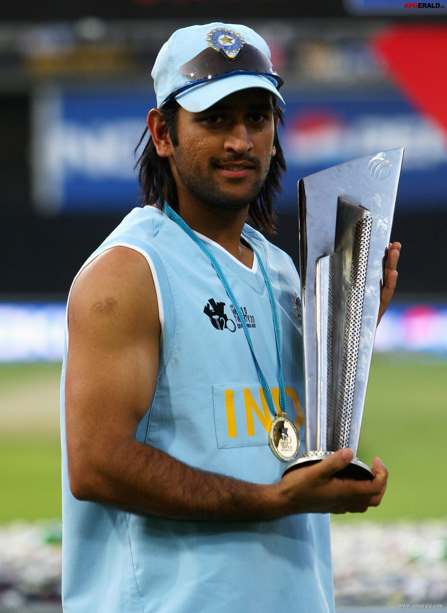

MS Dhoni's T20 career is marked by his exceptional performance in the format. He played a crucial role in the Indian team's success in the 2007 ICC World Twenty20, where India emerged victorious. Dhoni's leadership and strategic play were instrumental in the team's success, earning him the title of 'Captain Cool'. He continued to excel in T20 matches, contributing significantly to the Indian team's achievements in the format. T20 Internationals: 1617 runs in 98 matches. IPL: 5439 runs in 278 matches. Wicketkeeping: 158 catches and 47 stumpings. Overall: 4876 runs in 90 Test matches, 10773 runs in 350 ODIs, and 1617 runs in 98 T20 Internationals. Dhoni's leadership and contributions have made him one of the most successful captains in cricket history, particularly in the IPL.
